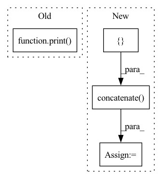

Pattern ID :13671
Before Change
print(f"Sharded dataset length: {dataset.num_rows}")
fdataset = dataset.map(featurize, batched=True, batch_size=42, num_proc=1)
print( "done")
if __name__ == "__main__":
main()After Change
dataset = load_dataset("the_pile", split="train")
// store all features in a list
f_container = []
// function to featurize a batch of examples
def featurize(examples):
encoded_input = tokenizer(examples["text"],
return_tensors="pt",
padding=True,
truncation=True,
max_length=args.max_length).to(device)
output = model(**encoded_input)
fs = output["last_hidden_state"].detach().cpu().numpy()
fs = np.reshape(fs, (fs.shape[0], -1))
f_container.append(fs)
// can return this to create a new column
// in the dataset itself if required
// return {"embedding" : output["last_hidden_state"].detach().cpu().numpy()}
dataset = dataset.shard(args.num_shards, index=args.shard_index)
print(f"Sharded dataset length: {dataset.num_rows}")
// num_proc > 1 will fail on GPU
_ = dataset.map(featurize,
batched=True,
batch_size=args.batch_size,
num_proc=1)
features = np.concatenate( f_container, axis=0)
savename = os.path.join(args.savedir, f"shard_index_{args.shard_index}_total_shards_{args.num_shards}_features.npy")
print(f"saving features to {savename} with shape {features.shape}")
np.save(savename, features)
In pattern: SUPERPATTERN
Frequency: 4
Non-data size: 4
Instances Fragment ID: 45785647
Project Name: microsoft/archai
Commit Name: 1f0a38e723b2db5c6bc6d461c0e1193ac22306bb
Time: 2022-12-16
Author: dedey@microsoft.com
File Name: scripts/misc/hf_featurize.py
M Class Name: AnonimousClass
N Class Name: AnonimousClass
M Method Name: main(0)
N Method Name: main(0)
M Parent Class:
N Parent Class:
M File Name: scripts/misc/hf_featurize.py
N File Name: scripts/misc/hf_featurize.py
M Start Line: 17
M End Line: 56
N Start Line: 18
N End Line: 87
Before Change
i = 0
metrics_aggregated[index] = {}
metrics_aggregated[index] = arr
print( metrics_aggregated)
return [], metrics_aggregated
def configure_evaluate(self, server_round, parameters, client_manager):
passAfter Change
length_agg_hist += val[0]
width_agg_hist += val[1]
ndarr = np.concatenate( ([ "Length:")
return ndarrays_to_parameters(ndarr), {}
def evaluate(
self, server_round: int, parameters: Parameters Fragment ID: 45785650
Project Name: adap/flower
Commit Name: f034b6d1f41b49735bdd996afa9edd6b136f4047
Time: 2023-01-20
Author: charles@adap.com
File Name: examples/quickstart_pandas/server.py
M Class Name: FedAnalytics
N Class Name: FedAnalytics
M Method Name: aggregate_fit(4)
N Method Name: aggregate_fit(4)
M Parent Class: Strategy
N Parent Class: Strategy
M File Name: examples/quickstart_pandas/server.py
N File Name: examples/quickstart_pandas/server.py
M Start Line: 40
M End Line: 53
N Start Line: 45
N End Line: 62
Before Change
params = kb_embedding_model_config
log.info("-------------Train KG Embeddings-------------")
print( batch_size)
trained_model = train(kg_embedding_model=kg_embedding_model, learning_rate=lr, num_epochs=num_epochs,
batch_size=batch_size, pos_triples=mapped_pos_tripels,
device=self.device, seed=self.seed)
After Change
comments="@Comment@ Subject Predicate Object")
// Create entity and relation mapping
all_triples = np.concatenate([ train_pos, test_pos, axis=0)
entity_to_id, rel_to_id = create_mappings(triples=all_triples)
mapped_pos_train_tripels, _, _ = create_mapped_triples(triples=train_pos, entity_to_id=entity_to_id,
rel_to_id=rel_to_id)
Fragment ID: 45785648
Project Name: pykeen/pykeen
Commit Name: 395fe00d38f5b5db52ef742e8e5ca105343eef53
Time: 2018-07-27
Author: ali-mehdi@live.de
File Name: src/utilities/pipeline.py
M Class Name: Pipeline
N Class Name: Pipeline
M Method Name: _start_pipeline(2)
N Method Name: _start_pipeline(2)
M Parent Class: object
N Parent Class: object
M File Name: src/utilities/pipeline.py
N File Name: src/utilities/pipeline.py
M Start Line: 46
M End Line: 82
N Start Line: 48
N End Line: 69
Before Change
imgs = [imread(file)[..., :3] / 255.0 for file in img_files]
imgs = np.stack(imgs, axis=-1)
print( "Loaded camera poses, scene bounds, and image data.")
return imgs, poses, z_bounds
def imread(img_file: str) -> np.ndarray:After Change
// Correct rotation matrix ordering and move variable dim to axis 0
// Please refer to the issue for details: https://github.com/bmild/nerf/issues/34
extrinsics = np.concatenate(
[ extrinsics[:, 1:2, :], -extrinsics[:, 0:1, :], extrinsics[:, 2:, :],
axis=1,
)
// load images
imgs = [imread(file)[..., :3] / 255.0 for file in img_files]
imgs = np.stack(imgs, axis=-1)
// swap the ordering of axes - (*, N) -> (N, *)
imgs = np.moveaxis(imgs, source=-1, destination=0).astype(np.float32)
extrinsics = np.moveaxis(extrinsics, source=-1, destination=0).astype(np.float32)
intrinsics = np.moveaxis(intrinsics, source=-1, destination=0).astype(np.float32)
z_bounds = np.moveaxis(z_bounds, source=-1, destination=0).astype(np.float32)
Fragment ID: 45785654
Project Name: dvelopery0115/torch-nerf
Commit Name: 7880d3f3120e36d298df8cde8c346a8cf69a974b
Time: 2022-06-30
Author: dreamy1534@kaist.ac.kr
File Name: torch_nerf/src/utils/data/load_llff.py
M Class Name: AnonimousClass
N Class Name: AnonimousClass
M Method Name: _load_data(4)
N Method Name: _load_data(4)
M Parent Class:
N Parent Class:
M File Name: torch_nerf/src/utils/data/load_llff.py
N File Name: torch_nerf/src/utils/data/load_llff.py
M Start Line: 69
M End Line: 140
N Start Line: 69
N End Line: 170